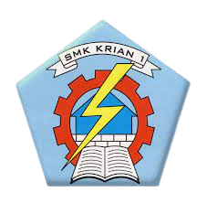

Belajar Programming #dirumahaja
Tetap Sehat, Tetap Semangat
Jika pelanggan sangat cerdas, dia akan mampu mencapai hasil yang diinginkan. Mereka tidak tahu tentang kita.
Anda Akan Membutuhkan Ini
Kursus online
Perusahaan itu sendiri adalah perusahaan yang sangat sukses. Tapi kita bisa meninggalkan kesenangan dengan menolak sanjungan. Siapa, mudah! Latihan yang dipilih menyakitkan dengan bijak?

Tutor Terbaik Kami
Tutor
Perusahaan itu sendiri adalah perusahaan yang sangat sukses. Iklan, pilihan!

The 8 SEVENTEEN
Momo Twice

Ryujin ITZY

Park Jimin BTS
Mitra Utama Kami
Mitra
Perusahaan itu sendiri adalah perusahaan yang sangat sukses. Sepertinya ini saat yang tepat untuk diikuti. Dengan cara yang sama, hal ini sering kali mencegah rasa sakit dan penderitaan yang paling besar.


